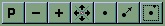

by John Russell, President,
Geodyssey Limited
Calgary, Alberta, Canada
Last updated 2004/06/19.
© 2004 John Russell and Geodyssey Limited. All rights reserved, worldwide.
License
This software product is owned exclusively by Geodyssey Limited of Calgary, Alberta, Canada. It is licensed for your personal use under the terms and conditions of a purchase agreement with Geodyssey Limited.
These HTML pages will be your window into the world of Georama! Here you'll learn all about running Georama and exploring the highways and byways of our world. Soon you'll be able to zoom and pan effortlessly around the globe.
Consider a shelf in your library containing several Atlases. Each Atlas is a collection of geographical knowledge that has been designed and published with some idea about its intended audience, and their information needs. When you take down and open an Atlas, you see in its pages individual scenes, frozen in scale, style and content at the time of printing.
Unlike the Atlas in your library, however, Georama's scenes may center on any part of the Earth, at any scale and in a variety of projections. Instead of referencing just one area of the Earth, they focus instead on the Atlas's different themes of knowledge. Yes, when you first open one of Georama's map windows (Scenes), it will be centered somewhere. But soon, with use, your Atlas will become a very personalized collection of Scenes, custom centered and scaled to meet your individual needs. So, when you set out to use Georama, expect to work with Atlases and their Scenes.
This document is intended to be browsed simultaneously with a live Georama session. Georama menus and dialog panels described in this document may be viewed in the live Georama session. Therefore, our first task will be to get you started with that live Georama session.
For the main thread of the story, just browse this document sequentially. You can get an idea of what lies ahead by consulting the Table of Contents. If you should link to any one of the many cross-references, remember that you can always take your browser's Back option to return to the main story. For cross-referential convenience, please note the navigation bar across the bottom of the page.
Have a good read!
If you are reading these help pages via Georama's Help linkage, you already know at least one way to get Georama up and running! But if you are reading this in printed form, or perhaps you have accessed this document on the Internet, then you should scan Starting Georama.
With Georama now up and running, you will see the Georama "Index" map window, titled "GEORAMA".
The Index map window initially shows a Miller-like projection of the coastlines and major lakes of Planet Earth. The Index window is purposefully small. (If you wish, you can move and/or re-size it using standard Windows methods).
Now note the Menu bar. There are four top-level choices: Atlas and Scene on the left, Setup and Help on the right.
Obviously, Help leads you hereabouts! It also provides product information, a description of any open Atlas and a link to our web site on the Internet. Setup will be explained later in a separate topic. You won't need to know about it for this quick tour!
Atlas and Scene are the main choices, to be explained momentarily.
Before we go into the menu items, note the toolbar at the bottom of the Index window. This houses the Navigation Tools. Look, but don't touch - just yet! Clicking on the individual tools will be used later to "navigate" the Index map. By navigate, we mean that you will be able to change what is displayed in the window. If you place your mouse cursor on a tool, you'll see (briefly) a Windows "ToolTip" for that tool.
Now back to the menu bar.
Click Atlas to see its drop-down option list. At the top of the list is Open Atlas... Click it. You should now see a dialog box titled "Select Atlas to Open". Now is the time to open up one of Georama's available Atlases. Select world. (If you're viewing a downloaded Georama sampler, you'll see only the name of the sample Atlas, for example, new_zealand). The Index map is now replaced with another Index map, specifically suited to the particular Atlas you selected. In the case of the world Atlas, it's another Miller-like map of the world, just colored differently and titled "Orbis terrarum descriptio" (how's your Latin?). Now if you select Help | Atlas Description you'll see a dialog box describing this Atlas. When you've read it, click OK to continue.
Now is the time to open one of the "Scenes" available for the selected Atlas. (A Scene is a specific view of some part of an Atlas, in which specific themes such as coastlines, rivers, lakes, place names, etcetera are displayed). So select the Scene menu item and double click on oceanview.
Behold a second map window! This is a Scene window.
It carries the name of the Atlas Scene selected, in this case, "World Atlas - World Bathymetry". The scene you opened is that of a specific part of the world, showing coastlines, land masses, oceans and ocean depths (bathymetry) displayed in varying hues of blue, according to the depth. The scene is drawn to a specific scale in a specific projection.
With the Scene in focus, if you next select Help | Scene Description, you'll see a dialog box with a description of what's in this scene. As before, click OK when you're done. The other menu items in the Scene window will be explained shortly.
Note that the Scene window also has a set of Navigation Tools in its lower left corner. Let's use a few of these to change what we see in the Scene's map field.
First try Zoom In (by clicking the button with the + icon). You should see the Scene re-drawn at twice its previous scale. Since the window size remains unchanged, you're displaying less data.
Next, return to the previous map. Click the button labeled P. This takes you back to where you were previously.
Finally, let's center this scene elsewhere. Click the Re-center tool (the bullet icon). Then point and click in either the Scene or Index window, anywhere in the world, at some place interesting! The Scene map window will now be re-centered and re-drawn at the new location. And note the change to the Index window!
There's lots more you can do with navigation tools, but you'll learn about all that later.
Do you want to get the coordinates of a point location? Position your mouse on the location and "right-click" it. You'll see that location temporarily illuminated with a colored marker, its latitude and longitude appearing in the message area at the bottom of the window.
Do you want to measure distances between locations? In a Scene window select Tools | Traverse. You'll see cross-hairs where the mouse pointer was before. Position the cross-hairs on the first point and "left click" the mouse. Move to a second location and left-click again. Now you'll see a line joining the two locations. The distance from the first point to the second will appear in the message area. This first line is considered to be "Leg 1" of a multi-leg route. You can continue clicking on additional locations to get the cumulative distance for all the legs of a route. To end the traverse, select Tools | End Traverse or press the <Esc> key. There's more going on here than meets the eye! But you've probably seen enough for now.
If you wish, you can move or re-size a Scene window using standard Windows methods. But if re-sized, the map will be re-drawn to fill the map field of the re-sized window. The scene center point and scale will not change, but the projection might!
Returning to the Index window, try opening one of the other Scenes, such as earthquakes. Does this scene look familiar? Of course, it's the San Francisco bay area. Try Zoom Out (by clicking the - icon in the navigation toolbar). See the cloud of red dots defining the San Andreas Fault!
Ok, let's investigate another method of centering a Scene. Go back to the Index menu and select Atlas, then Gazetteers... Up pops a dialog box titled "Select Gazetteer" listing the gazetteers available for this Atlas. Scroll down and select the one named "populated_place". Click Open (or double-click "populated_place").
Up pops yet another dialog box titled "Select Name in populated_place Gazetteer". Let's try "Auckland" (as we're interested in earthquakes in and around Auckland, New Zealand). As you enter the first few letters of "Auckland" you'll see Auckland selected in the list of populated places. Click Re-center Scene (or double-click the selected entry). Yet another dialog box asks which scene to re-center. Select earthquakes. (You can if you like close the Select Name dialog box now by clicking End/Cancel).
Re-selecting the earthquakes window, we see some tiny red dots representing earthquake epicenters around Auckland. Lets zoom out a couple of times by clicking the - navigation tool. Now let's inspect those earthquake epicenters more closely. On the Scene menu select Tools | Inspect.... Up pops a dialog box called Select Object Locator that lists the various things we might "inspect" in this scene. Select "epicenter" and click on Open (or simply double-click epicenter). Now when you move your cursor around in the scene, the nearest earthquake epicenter is highlighted and its attributes appear in the message area to the right of the toolbar. The attributes are: date and time of the 'quake plus its magnitude on the Richter scale. You can safely Zoom In, Zoom Out or go back to a Previous view without interrupting the search. To end the inspection, you can select Tools | Close Inspect or press the <Esc> key.
If you've finished investigating the world Atlas, try opening one of the others, if available.
If you're finished with Georama altogether, just return to the Index's Atlas menu and select Exit.
Ok, you've seen some quick results with Georama. Now learn all about it.
Have you taken the Quick Tour? If not, it might help set the stage for a better understanding of the overview.
What is Georama?
Georama is an end-user application that runs on Intel 486 or faster microprocessors under the Windows 95, 98, 2000 or Windows NT (4+) operating systems. It is distributed on an industry-standard CD-ROM. It can be run exclusively from your CD-ROM drive. It may also be copied to, and run, in part or in whole, from a hard disk. Your highest resolution video color mode is supported. A geographically-restricted version may be downloaded from the Internet and run from hard disk.
Georama is a world-class Geographic Atlas Viewer. It provides an Atlas of the World. Map navigation is seamless. Map features may be points or point sets, lines or line sets, regions (areas) or collections of regions, or surfaces. Regions may be simple polygons or complex structures such as island groups having islands within lakes within the islands, and so on. Surfaces may be global in scope and may be used to hypsographically depict feature elevations (or depths) or other non-spatial data such as temperature, pressure or product sales. Feature labeling is supported. Both feature and label presentation is scale dependent.
Gazetteers permit map centering by place name as well as attribute display.
An Inspect mode permits the graphical inspection of the name or other attributes associated with displayed locator features.
Georama accepts real-time or pre-recorded input from a GPS receiver. Moving vehicle location is tracked for later re-use and real-time map displays are automatically updated en route. Perfect for use with notebook computers!
Map raster images may be configured and output for downstream publication. Alternatively, maps may be output in HPGL vector format for precision plotting.
Georama is user-extensible. Existing Atlas maps may be modified or new maps specified. Users have direct control over map location, scale, projection, content and graphical presentation (style). Atlas users can even locate maps by reference to a user-defined "Points of Interest" file, in effect a personal gazetteer.
Georama can accommodate additional Atlases, without formal programming. An Atlas designer creates the relevant databases and defines their mapping options using instructions and utilities provided by Geodyssey.
Component updates and add-ons for Georama are available for download at no charge from Geodyssey's website.
There's several anatomical components to Georama. All are contained within a single directory (folder) named georama.
First, of course, there's the Win32 executable program georama.exe. It is contained within the sub-directory runw32. There's several associated files:
Next, there's the Atlases. Each has its own sub-directory within the georama directory. Following is an anatomical description of an Atlas:
An Atlas directory contains control files and data.
Atlas control files include:
Atlas data files include:
Georama is a "dual resident" application. It may be run exclusively from your CD reader, or exclusively from your hard disk drive, or a combination of the two!
If you opt to run exclusively from a CD reader (either local or networked), then you can expect somewhat slower performance and you will not be able to change the content or presentation of the Atlases and Scenes provided.
If you opt to run exclusively from a hard disk, you will need to have upwards of 600MB of disk space available. Performance will be maximized and you'll be able to make unlimited modifications or additions to the Atlases and Scenes provided. To effect such an installation, you merely copy the georama directory and its contents from the CD-ROM onto one of your hard disks, either into its root or any other directory.
The middle ground is to run Georama with only the modifiable or performance-sensitive components copied to your hard disk. Anticipating that this will be your configuration of choice, we have implemented a partial copy operation under the Index window menu item Setup. This procedure constructs on one of your hard disks a georama root directory, a copy of the entire runw32 sub-directory, the Atlas sub-directory world together with its control files and selected *.dat and *.nmx databases. This procedure requires about 10MB of disk space. The Setup | Copy from CD-ROM operation does not overwrite files of the same name already resident in a hard disk root directory georama. Therefore, if it is your intent to replace disk-resident files with those on the CD-ROM, you must first delete them from your hard disk.
If you suspect that performance would improve substantially by copying other critical files to hard disk, you are free to experiment by manually copying these files to their appropriate hard drive residence. (You can learn the names and paths of these files on the CD-ROM by consulting the appropriate atlas-name.atl control file). Knowing that there exists a hard drive option, Georama always checks file references for the existence of files in the faster (hard drive) medium.
Be assured that if you opt for either a partial or complete copy of the CD-ROM to your hard disk, NO MODIFICATIONS WILL BE MADE TO ANY OF YOUR SYSTEM FILES. All material copied from the CD-ROM is contained within a single directory structure named georama, easily removable at any time.
When you insert the Georama CD-ROM into a reader, it will normally Autoplay. Unless this Windows feature has been disabled (or temporarily suppressed by holding down the <Shift> key while inserting the CD-ROM), the autorun.inf script, located in the root directory of the Georama CD-ROM, passes control to the gestart.exe program located in the georama\runw32 subdirectory. Once in control, this program looks in the root directories of all of your hard drives for a directory named georama. If it finds one, it offers the option of either running from hard disk, running from the CD-ROM or quitting. Opting for CD-ROM operation in this configuration simply substitutes the CD-ROM versions of georama.exe and georama.gin for their hard disk twins, all other files being sought first from the hard disk. If no georama directory is found on a hard disk, gestart.exe offers the choices of running from CD-ROM, or quitting. Opting for CD-ROM operation in this configuration results in operation entirely from the CD-ROM.
(Although the Georama CD-ROM's gestart program will detect georama in hard disk root directories only, you can still import and run Georama in dual-residency mode as a sub-directory structure under directories other than the root, but you will need to start the hard-disk version of georama.exe via methods other than Autoplay).
If you are reading these pages via Georama's Help linkage, you already know at least one way to get Georama up and running! So you might want to just skip ahead to Initialization. Otherwise, you should continue.
This topic details several methods for initiating a Georama session. Even if you already know one method, you might find one of the other methods easier in your environment.
CD-ROM Autoplay Method
This is the simplest method. The Georama CD-ROM has an autorun.inf script in its root directory. When you insert the CD-ROM into your CD-ROM drive, and if AutoPlay has not been disabled, this script invokes the gestart.exe program in the runw32 sub-directory of the georama directory. This in turn pops up a dialog box inviting you to either "Run" or "Quit". If you have previously copied the executable parts of Georama to a directory named georama in the root of one of your hard disks, gestart.exe will detect it and invite you to run from there, instead of from the CD-ROM, accessing the CD-ROM only for data items not found on the hard disk. If you already have a copy of Georama running, the CD-ROM makes its presence (and data) known to the running copy via gestart.exe.
Start Run Method
You click on Windows Start, then Run, then enter x:\georama\runw32\georama.exe (substituting your CD-ROM drive letter for x). The drive could be a network drive. If you have previously copied the contents of the CD-ROM directory \georama\runw32 to a hard disk, then you would enter y:\[path\]georama\runw32\georama.exe, (where y is the hard drive letter and [path]\ is an optional intermediate directory structure).
Shortcut Method
To use this method, you must first create a Windows shortcut to x:\georama\runw32\georama.exe or y:\[path\]georama\runw32\georama.exe (as described above for the Start Run Method). You can place this shortcut on your desktop or in one of your application folders. Thereafter, to start Georama, you merely double-click the shortcut icon on your desktop.
If you will often be referencing a particular Atlas and one of its Scenes, you can add the Atlas and Scene names as parameters to the shortcut's command line (e.g., x:\georama\runw32\georama.exe world earthquakes). Then when you click on the shortcut's icon, you'll open Georama straightaway at the "earthquakes" Scene of the "world" Atlas.
Note: Since Georama does not use or permit references to a "current directory", it is immaterial from where you initiate its execution.
Ok, you now have Georama up and running. You should know that the program is initialized by reading a control file named georama.gin. This is located in the same directory as georama.exe As an end-user of Georama, you may never need to know what's in this file, (but it doesn't hurt to know that it exists). It was created by the Georama Atlas designer.
Once you've started up, (and seen our product splash panel), you will see a small window called "GEORAMA". This is the "Index" map window, or simply the "Index" (also sometimes referred to as the "Console"). It features a menu bar, a map field, a toolbar containing navigation tools and a message area to the right of the toolbar. Initially, the map field contains a world-wide Miller-like map of the world. (The contents of this map field are specified (initially) by the georama.gin control file).
The menu bar has just four top-level menu options: Atlas and Scene on the left, Setup and Help on the right.
The Help menu item has four drop-down options: About Georama... which identifies this product, Georama Help... which leads you into this HTML document set, Atlas Description (initially greyed) and Geodyssey on the Web which provides a link to Geodyssey's Internet website.
The Setup menu item provides setup information and (in some Georama distributions) "wizards" to set up or clear Georama from your hard disk. It is explained later in a separate topic.
Atlas and Scene are the operative menu items. You use the Atlas drop-down menu to select an Atlas and to work with Atlas-wide features. You use the Scene drop-down menu to select and work with the specific scenes of an Atlas.
The navigation tools can be used to change the center, scale and projection of the map that appears in the field of the initial Index window. (Although you are free to "navigate" this map, it may not be obvious why you would want to, so navigation is better explained later on in the context of Atlas Scene maps).
At any time, you can find the geographical coordinates of specific locations in the Index map field. Just position your mouse over the location in question and click the right button. You will receive a message giving the latitude and longitude of that location.
Georama is an Atlas viewer, so let's view an Atlas! Select the Atlas drop-down menu item. At this point many of the drop-down options are greyed (inactive).
If you select Open Atlas..., a dialog box titled "Select Atlas to Open" appears, offering a selection of Atlases you can open. You select one of the Atlas names, then click the Open button. Alternatively, you can simply double-click on the name. If you do not want to make a selection at this time, you click the Cancel button or press the <Esc> key. (If you opted to open an Atlas and there is already an Atlas open, you are first presented with a dialog box requesting permission to close the open Atlas). If you are operating in dual residency mode and the Georama CD-ROM is not present, you will receive error messages referencing theme data files that cannot be found on the hard disk. If you then insert the CD-ROM, and AutoPlay is enabled, you will be able to re-initiate the Open Atlas... operation and continue. Otherwise, you will need to Exit Georama and restart it (see next paragraph).
If you select Exit, Georama ends (after presentation of a confirmation dialog). Any open windows are closed. (The only way to close an open Atlas without exiting Georama is to open another Atlas).
When you open an Atlas, you may notice some changes to the Index window. First, its title has been changed. Second, its map field may have changed, perhaps only subtly. Third, if you select the Help drop-down menu you will see that the Atlas Description option is now active. If you select it you will see a dialog box titled "Atlas Description". These are the Atlas Author's notes. Once you've read it, click OK to continue. Fourth, if you re-select the Atlas drop-down menu you will see that many of the previously greyed (inactive) options are now active.
If the Open Data Server... is NOT greyed, then you are using a copy of Georama that for some portion of its data needs is linked to an SQL server. If this is the case, then you must now select this option and follow your specific SQL server access procedure.
The background color and content of the Atlas Index map field is defined by a control file associated with the Atlas. This is originally specified by the Atlas Author, but you may want eventually to change it. For more about this control file, see atlas-name.con.
Now that you have opened an Atlas, its time to open a Scene within the Atlas.
From the main menu bar, select the Scene drop-down menu. The Open Scene... option is at the top. When you select it a dialog box titled "Select Scene to Open" pops up offering a selection of scenes you can open. You may select a scene by clicking it, then clicking the Open button. Alternatively, you can just double-click the scene name. (If you are operating in "dual resident" mode, the selection of scenes may be drawn from both hard disk and CD-ROM, with the hard disk source taking precedence). If you do not want to make a selection at this time, you can click the Cancel button or press the <Esc> key.
Note: Many of the names you will see in Georama's dialog boxes are extracted directly from Georama's sub-directories and/or file names. To ensure future cross-platform portability, we have restricted all such names to lower case letters, underscores and numerals (numerals following only).
Having selected a Scene, a second map window appears beside (or perhaps partially overlapping) the Index map window. This is a Scene map window, or simply, a Scene. Multiple Scenes may be open simultaneously. At any time, you can circulate the focus between the Index and any open Scene windows by pressing the <Tab> key. You can close a scene by bringing it into focus and selecting Tools | Close Scene or by clicking on the window delete button in its upper right-hand corner, then responding positively to the resulting permission dialog.
A Scene window carries a title prescribed by a scene control file. It has a menu bar, a map field, navigation tools and a message area, to the right of the navigation tools. If you select Help | Scene Description you will see a dialog box containing a description of the scene and its contents. This text was drawn from the scene-name.scn control file. Once you've read it, click OK to continue.
The map field background color, content and initial geometry are also set by the scene control file, scene-name.scn, which is associated with the Atlas. This file is normally supplied by the Atlas Author, but may be created or modified by the user. (If you are considering making modifications, you will need eventually to inspect the supplied control files and study the specifications for a generic scene-name.scn file, described in detail later). When a scene is being rendered, the message area names the themes currently being drawn. (If you find the drawing time for a particular theme overly lengthy, you can press the <Esc> key to interrupt that part of the presentation).
The initial desktop position and size of the Georama Index and Scene windows are set by parameters contained in the georama.gin control file. Using standard Windows procedures, you are free to move these windows and/or change their size (within reasonable limits). Whatever changes you make to a window will persist for that specific window. If you are running from CD-ROM alone, these persistent desktop settings are lost at the end of a session. If, however, you are running from hard disk, the persistence settings are retained across sessions, indefinitely. Moreover, they are retained independently for named windows: the initial Index window, each Atlas-specific Index window and each Atlas/Scene-specific Scene window. (For the general method of resetting the persistence settings, see Reset. For the complete story about Georama's desktop windows persistence, see Desktop Persistence).
When you change the size of one of the windows, it is re-drawn from scratch, using the background and content definitions contained in its control file (either atlas-name.con or scene-name.scn). The center point and scale of the map are NOT changed. Therefore, the new map field will contain less or more information than before, depending on the new size. The projection may change. (In some instances, the resultant map field may not be feasible for the particular projection and an error message may be generated. In such cases, you simply re-size repeatedly until the size once again becomes workable).
At any time, you can learn the geographic coordinates of specific locations within a scene's map field. Simply position your mouse over the location and click its right button. Its position is temporarily illuminated with a colored marker and its latitude and longitude are returned in the message area. Markers are eliminated from the scene the next time it is re-drawn. You can capture such locations coordinates for study or subsequent use (see Reporter).
You can easily find the distance between points. You can also find the cumulative distance for a multi-point route (a "traverse"). To do either, with a Scene in focus, select Tools | Traverse. The message area advises you to "Click on traverse start point". You will see that you are in "traverse" mode because the mouse pointer in now replaced by a cross-hairs symbol. So you point and left-click on a first point. Its position is illuminated by a colored marker and the message area announces that a traverse has been started. Now point and left-click a second location. Again a colored marker illuminates the current position and a colored line joins this and the previous position. (This line is not necessarily "straight" in your display). In the message area you will see the distance between these two points. This is the "leg" distance. Also reported is the cumulative distance for the traverse. Distances are expressed in units defined in the scene-name.scn scene control file. Options are mi (miles), nm (nautical miles) and km (kilometers, the default). You may continue indefinately marking waypoints. To end a traverse, simply select Tools | End Traverse or press the <Esc> key.
So long as the scene is open, distances are calculated between successive waypoints, even if the scene is re-configured. (See the navigation topics following). This means that you can get the distance between features that are not neccessarily visible at the same time. You can capture the waypoints and distances for study or subsequent use (see Reporter).
Note: Distances between successive points (legs) are true geodesic distances, a geodesic being the shortest distance along the surface of the ellipsoidal Earth, NOT the distances measured in the current projection! To visually sense the distance distortions inherent in any of the "flat-Earth" projections, you might try selecting Tools | Show Map Distortion. Now the cursor is replaced by cross-hairs surrounded by a distortion ring, the Indicatrix. In large-scale displays, this ring may appear nearly circular, indicating nearly equal distortion in all directions. In smaller-scale displays, notably those in the wwview, wwmerc and ortho projections, the Indicatrix reveals much greater distortion in specific directions. For comparison purposes, left-clicking the mouse leaves behind a copy of the Indicatrix. Numeric records of distortion values can be recorded for subsequent inspection or analysis (see Reporter). To end this distortion display mode select Tools | Quit Distortion Display.
The Georama Index and Scene maps may be local, regional, continental or world-wide in scope. Since we don't yet have holographic 3D displays, we are forced to display "round-world" features using "flat-Earth" cartographic techniques. Depending on the projection used, the display is necessarily constrained as to how much geography can be viewed at any one time.
Our solution is to define maps in such a way that you can at any time change the center (focus), scale and/or projection of the map so that you view the features that you want to see, at the scale you want to see them, regardless of where in the world they might be. Georama lets you zoom or pan any of its map databases, anywhere on Earth, seamlessly.
We call this process of zooming or panning maps "navigation".
Navigation is quite distinct from window size manipulation. Navigation affects the "geometry" of a map (center, scale and projection), while window sizing affects only the field of view available for display. Changes in Index or Scene geometry are reported in the message area. Changes may also be recorded for subsequent study or analysis (see Reporter).
Georama provides several methods of navigation:
Navigating by Tool
The navigation tools method is the easiest to use and works almost
exactly the same way for both Index and Scene maps.
Here's a fake copy of the Navigation Tools. The real one sports active
Windows ToolTips. This one links to names and descriptions of the action for
each button. Here's the definitive reference on how to navigate using the Navigation Tools.

Now is the time to mention that you can at any time use the navigation
tools to navigate the Index map in much the same way you use it to navigate
a Scene map. Why would you want to? Because it permits you to re-center and
re-scale the Index map to a particular region of the Earth and perhaps
allowing more precision when re-centering a Scene window!
Navigating by Menu
You can navigate an Index map from the Index menu bar by selecting
Atlas | Index map Geometry | Change.... The current projection,
scale and center are displayed in a pop-up dialog box named "Scene:
atlas-name". You may then select a different projection, scale and/or
center point and then click on Change Scene to see the effect in the
Index map field. Values may be expressed in any of the formats generally
supported for the specification of geometry.
The dialog stays on screen so that you may experiment with different values.
To end the process click on End/Cancel. To merely see the current
geometry, select Atlas | Index map Geometry | Report. The current
geometry is reported in the message area.
You can navigate a Scene map from the Scene menu bar by selecting
Geometry | Change.... The current projection, scale and center are
displayed in a pop-up dialog box named "Scene: scene-name". You may then
select a different projection, scale and/or center point and then click on
Change Scene to see the effect in the Scene map field. Values may be
expressed in any of the formats generally supported for the specification of
geometry. The dialog stays on screen so that you may
experiment with different values. To end the process click on
End/Cancel. To merely see the current geometry, select Geometry |
Report. The scene's current geometry is reported in the message area.
Two other navigation options for Scenes are Geometry | Center
on POI... (Point of Interest) and Geometry | Center on Survey
System Graticule. In this version of Georama both are greyed
(inactive).
Center on POI... is presents a dialog box titled
"Select Point of Interest" listing the names of available "Points of
Interest" for this Atlas. To re-center the current scene to focus on one of
these points, select a "Point of Interest" entry and click the
Re-center button. Alternatively, you can simply double-click the
"Point of Interest" entry. Either way, the scene will then shift to focus on
this point. If you don't want to change the focus at this time, click
Cancel. Re-centering a scene by reference to an Atlas's "Points of
Interest" control file provides a convenient mechanism for focusing several
scenes on the same spot. The "Points of Interest" for an Atlas are contained
in an ASCII file that associates geographical coordinates (latitudes and
longitudes) with place names. This file has the generic name atlas-name.poi. It is optional for an Atlas. As
described in a later section, this file can be created, modified or extended
by use of any text editor, providing only that the file is (or will be) disk
resident.
Center on Survey System Graticule supports map centering by legal
land description, necessarily applicable only for specific regional Atlases.
A prototype of this method of centering Scenes is operational for an Atlas of
the Province of Alberta, Canada.
Navigating by Gazetteer
You can navigate any scene by reference to objects named in one or more of
Georama's gazetteers. (Gazetteer being just another word for
"dictionary of geographic names").
From the Index menu, you select Atlas | Gazetteers... This brings
up a dialog box titled "Select Gazetteer". Listed are the names of the
Georama gazetteers available for this Atlas. The names are suggestive of the
types of objects featured by the gazetteer. To work with a specific
gazetteer, you select and click the Open button. Alternatively, you
can simply double-click your selection. (Otherwise click the
Cancel button).
Next you are presented with another dialog box named "Select Name in
gazetteer-name Gazetteer". This box contains a text entry field and lists
up to four columns of names arranged alphabetically. You can designate a
selection by either of two methods: type the place name you want into the
text entry field or scroll through the list and click on a displayed entry.
To enter a place name directly, you may only need to type the first few
letters to narrow the range of place names on file in this gazetteer. As you
type the name, the list is changed dynamically to select (at the top of the
second column) the first name on file that matches the letters typed thus
far. If none match at this point, then the first name following
alphabetically is selected. If you have typed the complete name and there are
multiple matches, then the first on file is selected.
To scroll through the name list, you use the scroll buttons below the name
list. |< changes the displayed list to the beginning while
>| changes it to the end, < moves the displayed list back
three columns while > moves it forward three columns. When you see
the entry you want, just click it or use the arrow keys to select it.
By whichever means you use to select an entry, you will see its name and
coordinates in bold beneath the scroll buttons. If there are multiple
entries with the same name you may be able to select the entry you want by
selecting them in turn and comparing coordinates. Some of the gazetteers may
contain additional textual information associated with objects. When
available, you may view this information by clicking the Display Text
button. (If additional text is unavailable, this button is greyed). You can
use this feature without having to open a scene. If you don't see the name
you want, click End/Cancel. If you do, click Re-center Scene.
If you currently have more than one scene open, yet another dialog box
will appear named "Select Scene to Re-center". Just select the name of the
scene you want re-centered and click Re-center. Otherwise click
Cancel.
When a scene is re-centered using a gazetteer, the name selection box
remains on screen, just in case you might want to re-center a scene on
another place. To clear it, click End/Cancel.
When the scene is re-centered it may not neccessarily be in focus (or
visible). If totally hidden, you can bring it into focus by clicking in the
Index or any other Scene and hitting the Tab key one or more times.
Navigating by GPS
When installed in a suitably configured portable computer, Georama
supports the real-time integration of GPS receiver inputs. The GPS receiver
must first be connected to the notebook computer via one of its serial ports
and have its GPS output function activated appropriately. Alternatively, you
can simulate the real-time inputs using a pre-recorded ASCII text file of
locations. (Real time or simulated input is specified by the
georama.gin control file).
With both an Atlas and Scene already open, you activate Georama's GPS
navigation and position tracing by selecting the Index menu option Atlas |
GPS Input. You are then presented with the GPS monitor dialog box. Its
name will be either "GPS input from COMx (yyyy,8,N,1)" (where COMx is
a serial com port and yyyy is a baud rate) or "GPS input from
source-name (where source-name file containing pre-recorded simulated
GPS locations). These values are set by the georama.gin control file.
You use this dialog initially to open a GPS trace file. Click on
Open. You will be requested to supply the name of a trace file,
located in a directory set by the georama.gin control file. An
extension will be supplied by Georama. Click Save. If you name an
existing file, you will be asked whether to open it in "write" or "append"
mode. (In this way you can go for a drive with your GPS running, stop for
lunch and shut down, then pick up the trace again when you get back on the
road).
Assuming that you have connected your GPS correctly (or specified a
simulation file), you will now be in a position to start GPS navigation and
tracing in a specific Scene. In the GPS Input dialog box (the GPS
Monitor) click Start. Now select an appropriate scene, then, in the
Scene window, toggle the drop-down menu item Tools | GPS Trace ON.
On first receipt of a location from the GPS receiver, Georama logs the
location to the trace file, re-centers the scene to that location and draws a
track start marker. On receipt of subsequent locations (typically, one per
second), the location is logged and the progress traced in the scene. If the
track approaches an edge of the map field, the scene is re-centered, re-drawn
and overlaid with the entire track up to that point in time. Because the
stereographic projection is always renderable, anywhere, we recommend that
wherever possible the stereo projection be specified for the scene.
If you reselect the GPS Input dialog box you will see displayed the
messages as they arrive (or are simulated). Also displayed are calculated
horizontal and vertical speeds. Note that you can
Pause the recording, enter a description for the last point displayed,
then Resume recording. (In this way, if out bird-watching, you might
stop to view the rarely-seen Left-Handed Jibber-Jay, record that fact, then
continue.
You discontinue real-time GPS operation via selection of the menu option
Scene | GPS Trace OFF toggle. Of course, the GPS temporary
trace file remains available for post-processing.
If you are operating Georama in an environment where mouse management is
impractical, be aware that once a scene window is selected, several keyboard
keys become equivalent to mouse click operations. Here are the keys that
become active:
The <PageUp> and <PageDown> keys are equivalent
to the Scene's ZoomOut and ZoomIn navigation tools.
<Arrow> keys are equivalent to the Scene's
East-West-North-South Step navigation tool options. The
<Backspace> key is equivalent to the Scene's Previous
navigation tool. The <Tab> key toggles between Scene and Index
windows. (When either type of window is active, its menu options become
accessible from the keyboard using the normal Windows <Alt> key
shortcuts).
Georama is programmed to process GPS NMEA "sentences"
output from the receiver in any of three formats: $GPGGA, $GPGLL and $GPGSA.
$GPGGA sentences provide time-stamped latitude, longitude
and elevation while $GPGLL sentences provide time-stamped
latitude and longitude without elevation. $GPGSA sentences
identify the satellites used by the receiver. Either $GPGGA or $GPGLL
sentences must be present while $GPGSA sentences are optional. Although only
the latitude and longitude data are used by Georama to plot the current
position, all received data is logged to an output file for possible
post-processing. NMEA sentences are assumed to be coded in ASCII as 8 data
bits, no parity and one stop bit.
A Scene may contain point object locators that can be sought out and
inspected using the mouse. This action is called "inspecting" and is
initiated from the Scene menu by toggling the Tools |
Inspect... option. (If greyed, then the scene has no "inspectable"
locators). You are presented with a dialog window titled
"Select Object Locator" listing the "inspectable" objects defined for
this scene. You can select and Open the object you wish in the usual
manner. Otherwise, you can just Cancel the inspection.
Now when you move the mouse into the map field of the Scene, the cursor is
replaced with a "magnifying glass" icon. As you move around in the map
field, the nearest instance of the selected object type is highlighted by a
marker of some type and text describing attributes of that instance is
displayed in the message area to the right of the toolbar.
You can Zoom Out, Zoom In, Step, or
go back to the Previous scene without interrupting the inspection
mode. However, any navigation operation that would (or could) re-center the
scene will terminate the current inspection. (Of course, it can easily be
re-initiated from the menu).
You can deliberately end the inspect process by selecting the Tools |
Close Inspect toggle or by pressing the <Esc> key.
You can record for subsequent inspection and analysis a number of
interactive events. To initiate recording mode, while in the Index window
select Atlas | Reporter.... This brings up a dialog box named "GEORAMA
Reporter". This dialog features check-boxes for several interactive events:
Scene Geometry, Traverse Detail, Distortion and Locations. You activate or
deactivate the reporting/recording of an event type by checking or
un-checking the appropriate box. After making your selection, you may
Close the dialog box. The current selection remains in effect.
The action of the Reporter is to record in a simple text file ASCII
messages describing the event. This file is named in the georama.gin
control file (defaulting to \windows\temp\grprtr.txt). At the
conclusion of a session, this file can be inspected by any simple text
editor, such as Windows NotePad). Another interesting presentation is
in an independent window via the supplied program grtail.exe. This
program displays the last few lines of the recorded events as they happen. A
supplied batch procedure reporter.bat can be used in a DOS box to
initiate grtail.exe and point it to the Reporter file.
Here's where you get to keep your most beautiful scenes for posterity!
You can save a scene's map field as a bitmap, then reprocess it for use in
publications or on the Internet! (Note that this feature may not be available
in all distributions of Georama).
You access Georama's Scene bitmap output functions via the Output |
Bitmap > menu option. This leads to an additional list of options:
Size..., Save to Clipboard and Save to File ...
Size... optionally may be used to set the scene map field
to a specific pixel size. A dialog box titled "Set Scene Field Size in
Pixels" provides areas for the entry of field width and height in terms
of absolute display pixels. These entry areas have as default values the
current field size width and height. You may override either or both of
these values by direct entry of an integer, or by clicking the
increase/decrease spin buttons.
When ready, click the Re-size button to re-size and
re-draw the map field to the dimensions specified. Otherwise, click
End/Cancel. The dialog box remains on-screen, anticipating
further use in fine tuning the map field dimensions. When done, click the
End/Cancel button. The Size... operation
is equivalent to re-sizing the scene window with the mouse, but much more
precise. (Typically, you will use this option if you are publishing to a
specific pixel dimension standard and you want to avoid image re-sampling in
your downstream application).
Note that you specify the size of the scene's map field;
therefore the scene's window will be somewhat larger to accommodate its
borders, title and toolbar, etc.
Save to Clipboard or Save to File... is
used to output the scene's map field as a bitmap in standard
png format. Choosing the Save to Clipboard
option pastes the bitmap to the Windows Clipboard, overwriting anything else
that might be there.
Choosing the Save to File... option brings up a file
selection dialog. This dialog offers a list of files currently in a selected
temporary directory that have the png extension. You can
select one of these to be overwritten or you can enter a new filename. In
either case, you click the Enter button to write to the
named file. If you change your mind, click Cancel to
terminate the output operation altogether.
Note that bitmaps are prepared using the prevailing
Win32 color depth (8-, 16-, 24- or 32 bit). If in doubt about a bitmap's
parentage, you can determine its color depth by viewing it with any browser
that supports png and inspecting its image attributes. If you
need more or less color depth, you may be able to change the prevailing
setting using the Windows Start | Settings | Control Panel | Display |
Settings options.
Here's where you get to produce high-quality plotted hard copy of selected
Scenes!. You can save a scene's map field as an HP-GL/2 plotter command
stream. Then you can direct it to an HPGL-aware printer/plotter for immediate
plotting, or save it in a file for later publication.
You access Georama's hard copy output functions via the Atlas |
Hard Copy... menu option. This leads to an additional dialog box
titled "Georama Hard Copy Output". This dialog is used to specify a
Scene and its geometry for rendering as an HP-GL/2 plotter command stream,
and to then direct that stream to an attached HP-GL/2 compatible
printer/plotter (such as most HP LaserJets), or to a file for later plot
processing.
The "Georama Hard Copy Output" dialog box has four entry areas
and two main action buttons.
The Scene entry area lists all of the Scenes of the
selected Atlas. If a Scene is currently open, then its name is highlighted
in the list. You may select some other Scene for output by clicking on its
name.
The Geometry entry area has two radio buttons. Unless no
Scene is currently open, Current Window is the default.
Selecting it sets the geometry for the plotted output scene to that of the
currently open scene. On the other hand, selecting Scene
File sets the geometry for the plotted output scene to that
specified in the Scene control file. Note that the
dimensions of the map field of the plotted Scene will generally differ from
those of the map field of the displayed scene, revealing less or more data
(see next paragraph).
The Format entry area lists (by name) all available plot
output formats. These are the section names of hard copy generation
parameters in the georama.gin control file. These generally
control the orientation and map field dimensions of the plotted hard copy.
Several formats are supplied with the Georama CD-ROM. They can be modified or
others added by judicious editing of the disk-resident copy of the
georama.gin control file. You select one of the available formats
by clicking on it.
The Output entry area specifies whether the plot stream
is to be directed to a printer/plotter or to a file for later processing.
Radio button selection of output mode defaults to Device at
port PRN (other on-line devices can be selected). The
alternate selection (File) leads (via the
Change button) to an output file selection dialog. This
dialog offers a list of files currently in a selected temporary directory
that have the hpg extension. You can select one of these to
be overwritten or you can enter a new filename. In either case, you click the
Enter button to write to the named file. If repeatedly
outputting to the same file, no Change will be necessary
(but you will be required to confirm the overwrite).
When all four entry areas of the dialog have been completed, you may
commence plot stream generation by clicking the Generate Plot
Output button. Otherwise, you may cancel the dialog without
plotting by clicking the End/Cancel button.
Once initiated, plotter stream generation takes place in the
background. Although you are free to continue with other operations in
Georama, you must be careful to avoid making changes to the Scene control
file selected for plotting, until you are sure that the plot stream
generation activity has terminated.
Your printer/plotter may have limitations with respect to its capability
to draw complex scenes. These may be a function of its memory and/or
sophistication of raster generation. If you suspect that your printer
limitations have been exceeded, you should first direct the plot stream to a
file where you can inspect it with a text editor such as WordPad.
The simplest way to get around printer/plotter limitations is to reduce the
scale factor and/or map field. If this is not practicable, then you should
consider dropping themes or labels from the scene. Look also to restrict the
use of point markers having circular components. (See Making
Modifications and Troubleshooting).
If you wish, you can run the plot generation program
(geplout.exe, in the runw32 sub-directory) from the
command line, independently of Georama. Geplout takes
twelve positional parameters (so be careful!): For example, to plot the hydrography in and around New Zealand:
c:\georama\runw32\geplout c:\georama\runw32\georama.gin
Letter.portrait e:\georama\world
c:\georama\world c:\georama\world\world.atl c:\georama\world\oceanview.scn
s41 e173 1e6 stereo 0 PRN
If you are encountering difficulties in getting started, either from
CD-ROM or from your hard disk, then you will not likely be reading these
words on-line. Perhaps the best remedial action you can take is to review
the instructions on the jacket of the CD-ROM and be sure you are attempting
to run in either a PC Windows 95, Windows 98, Windows 2000 or Windows NT(4+)
environment. Remember also that you can view these pages directly with your
browser pointed at \georama\runw32\georama.html).
If your intent is to run Georama exclusively from CD-ROM, then be sure
that none of your hard drives have a root directory named georama.
If this is the case, delete or rename such directories and try again. If
your intent is to run in dual-residency (or exclusively hard disk) mode, then
you should delete all existing (and possibly corrupted) Georama components
from your hard disk(s) and then re-copy Georama from the CD-ROM to a selected
hard disk using the Setup | Copy Georama to Hard Drive...
menu options.
If you have successfully started Georama, and can read these Help notes
on-line via Georama, but are encountering difficulties, then the first thing
you must do is review your operating environment by activating the
Setup | Information menu option. There you will see a
report giving the release date of the software and the operating
environmental parameters that the software has assumed. Inspection of this
information may reveal if you have incorrectly set up Georama for
dual-residency operation.
If this information does not provide an answer to your challenge, you
should use the feedback.txt file that may be found in the
runw32 sub-directory of the georama directory on the
CD-ROM. This file is set up as a NotePad .LOG
file. As such, you will be able periodically to append your notes, questions
and suggestions to the disk copy of this file, then e-mail or fax it to
Geodyssey. You should be especially aware that you can freely copy
and paste the contents of the Index window Setup | Information
panel into the feedback.txt file. We stronglyly recommend
that this information accompany any trouble reports to Geodyssey.
On receipt of your notes, suggestions or trouble reports, we will try to
determine if corrective action can be taken. Our findings will be aggregated
periodically and published on our web site at
http://www.geodyssey.com.
Providing you have established a modicum of hard disk residency, you are
free to make modifications. (If you are serious about making modifications
and have not already established some hard disk residency, now would be a
good time to review the Setup and Dual
Residency topics).
Modifying Scenes
The mechanism is simple. While the Scene is open, select the
Tools | Edit Scene... menu option. This action opens the
scene control file (scene-name.scn) within the Win32
NotePad editor. Here you are free to make whatever changes you
wish. To see their effect, you will need to save the NotePad file
and re-open the Georama Scene. If it's not quite right, you can make more
modifications and repeat the test cycle.
When you've got it right, just Exit NotePad. Be
aware that the effect of any intervening geometry change actions could be
lost. If you mess up beyond repair, you can always restore the scene control
file from its twin on the distribution CD-ROM. And of course, you can easily
create a new scene based on an existing one by use of NotePad's
Save As operation. The new scene will be included automatically in the
Index window's Scene | Open Scene... selection list.
That's the easy part! The harder part is knowing what to modify.
You must begin with an understanding of the general purpose and form of
Georama control files. Then you should move on to
review the more specific purpose and form of
scene control files. In particular, you should
then view a specific scene control file, the world Atlas Scene
template template.scn.
As you will note, the Template Scene is intended to provide examples of
all the possibilities example of each type of possibility for this Atlas. You
could simply activate one or more of these possibilities and use the Template
directly, perhaps renaming the file and assigning a new title and description.
need. The scene.title keyword defines a title that will display in the
open scene window and on any hard copy output that you might produce from the
scene. The scene.description keyword provides the text that is
displayed in response to selecting the Scene's Help | Scene
Description. You might want to change some of this information. Note the
use of "newline" line endings "\n", the "to be continued" line ending "\" and
the single column indentation of continuation statements.
The chances are you'll want to change the color, marker size, line width
or something. These attributes (and others that control the rendering) are
collectively called a style. Here's a browse sequence that tells the whole
story about styles.
The geometry. keywords define a scene's opening
geometry. You might want to set the geometry
section to center the scene every time on your home town! Remember that these
statements will be adjusted automatically whenever the Scene is used and the
geometry changed through use.
Modifying Atlas Index Maps
You can also modify an Atlas Index map. Using an editor such as
NotePad, simply edit the atlas-name.con control file, located
in the atlas-name subdirectory of the georama directory.
As you can see, this file has many statements in common with
the scene control file. You can make similar modifications.
Note that you will have to save the modified atlas-name.con file and
re-open the Atlas to see the effect of your modifications. As in modifying a
scene control file, if you mess up beyond repair, you can restore this file
from its twin on the CD-ROM.
Adding New Feature Data to an Existing Atlas and Adding Additional
Atlases
If you know how, you can extend an Atlas to include your own feature data
and/or gazetteers. You can also add entirely new Atlases. You will require
no programming skills as such, but you may need to massage your data somewhat
and run some Georama-related stand-alone data preparation utilities. To
learn how to do all this you will need to review another document called the
"Georama Atlas Author's Guide". This HTML document is available at
Geodyssey website http://www.geodyssey.com.
If you see an opportunity to redistribute your augmented version of
Georama, be sure to contact Geodyssey Limited for details regarding our
generous quantity discounts and alternate Georama licensing arrangements.
Adapting Georama for Use in Other Applications
If you are a C or C++ programmer and you guess that you might adapt
Georama to fit your specific application, consider acquiring the
Hipparchus Development Tools for Intel platforms. Besides providing
the essential Hipparchus Library that lies at the heart of Georama,
this SDK provides you with the complete and recyclable C language source
programs and data for Georama (including any updates released subsequent to
publication of these pages). These programs exploit the native Win32 API. No
additional tools or proprietary products are required. You can read all about
it at the Geodyssey website http://www.geodyssey.com.
Hipparchus (pronounced hih-PAR-kuhs) was perhaps
the greatest of the ancient Greek astronomer mathematicians. The inventor of
latitudes and longitudes, he used these measurements to calculate distances
on the surface of the Earth. As you read on you will see why we named our
product as we did.
Hipparchus (our product) is a C/C++ language
function library that provides application developers with the geographic
tools to deal with the "where" of an application. Hipparchus is the engine
that calculates the spatial relationships between objects on or near the
Earth's surface. Hipparchus also provides efficient indexing for your
location-specific external data. Coexisting with your chosen database
management system (DBMS) and graphical user interface (GUI), Hipparchus
communicates with your application via C/C++ language memory structures.
For an extensive overview of Hipparchus, please see our Georama website
http://www.geodyssey.com. Alternatively, you might browse
the HTML documents overview.html, which may be collocated
with this HTML document.
Georama and Hipparchus are exclusively owned and
distributed by Geodyssey Limited of Calgary, Alberta,
Canada. Geodyssey is a privately owned company of software professionals who
are dedicated to the promotion and support of these remarkable products.
Geodyssey makes this technology available under simple development and
end-use licensing agreements, usually free of on-going royalties.
Geodyssey's general licensing policy provides the developer with
affordable access to this remarkable technology while deferring payment of
any additional licensing fees until the resulting end-use application has
demonstrated to customers the benefits of the technology.
Geodyssey also offers extensive training, consulting and application
development services.
For additional information, please visit our extensive web site at
http://www.geodyssey.com or call, fax or write to Geodyssey.
You have come to the end of the main thread of the Georama story.
What follows are Reference topics, which are accessed either directly via the
Table of Contents or links embedded in the main topics or
other reference topics.
To establish the minimum dual residency for Georama, you will need to
create a georama directory in the root of one of your hard disk
drives and then copy strategic sub-directories and files into this directory.
To remove Georama from your hard disk, you can simply delete the entire
georama directory structure.
To make it easy, these processes are provided through the Index window
menu option Setup and its drop-down option list:
Information..., Copy Georama to Hard Drive... and Remove
from Hard Drive...
Select Setup | Information... to view an information panel
addressing version information and the current state of dual residency.
To establish our recommended minimal dual residency, you will require
about 10 megabytes of hard disk space. Select Copy Georama to Hard
Drive... You are presented with a list of hard drives on your system and
the amount of free space on each. Select one of the drives and click
Copy. (Otherwise, click the Cancel button). A directory
georama is created in the root of the selected hard disk and the
recommended minimal sub-directory structure and content is copied from the
CD-ROM. Dual Resident mode commences immediately, without need for a
system re-start. If Georama is already established on hard disk, this option
is greyed.
Depending on your performance requirements, you are free to add or delete
data files from your hard disk. To learn the names and paths of these files,
consult the atlas-name.atl, atlas-name.con and
scene-name.scn control files.
To remove all traces of Georama from the hard disk, select Remove
from Hard Disk... Here you will receive instructions concerning the
removal of Georama from your system.
If you have opted for at least partial hard disk residency, you may reset
persistence settings such as Georama's windows desktop positions and sizes.
You do this by exiting Georama and deleting the persistence settings file
named georama.dtp (which resides in the georama\runw32
directory on the hard disk). Otherwise, if running from CD-ROM, you need only
re-initiate Georama. You may also reset persistence settings for specific
windows. For the complete story see Desktop
Persistence.
When you start Georama for the first time "out of the box", its windows
are positioned and sized on your desktop according to specifications
contained in its associated control file georama.gin. If you
subsequently opt for at least partial hard disk residency (using the
Setup option, for example), then you are free to edit the hard disk
version of georama.gin and change these settings.
However, regardless of whether you are running from CD-ROM or from hard
disk, you can manually change the position and size of Georama's windows and
have those changes persist. If running from the CD-ROM, any changes you make
will persist for the session only. If running from a hard disk, any changes
you make will persist across multiple sessions, indefinitely.
When running from hard disk, changes are recorded in an ASCII file called
georama.dtp, which is created afresh in the
georama\runw32 directory any time you start Georama from hard disk
without georama.dtp present.
For operation from hard disk, desktop window persistence is separately
defined for three categories of Georama's windows: the initial index/console
window, Atlas-specific Index windows and Atlas/Scene-specific Scene windows.
Moreover, changes are associated with specific instances of windows in each
of these three categories.
Any changes you make to the console/index window before opening an Atlas
are recorded as parameters of an entry in georama.dtp having the
keyword georama (there can be only one of these). Any subsequent
session will position and size the initial console/index window according to
these parameters. In the absence of this entry, Georama positions and sizes
the window according to the generic specifications contained in
georama.gin.
When you open an Atlas, Georama checks for an Atlas-specific entry having
the keyword atlas-name. If found, Georama opens the Atlas Index
window using position and size parameters saved previously. In the absence
of a matching entry, the Index window for this Atlas inherits the position
and size of its immediately preceding instance (either the initial
console/index or another Atlas Index). Georama then manufactures an entry
for this atlas-name. If, subsequently, you manually change this
window, its old settings will be replaced with the new (unless maximized or
iconized). Any subsequent opening of this Atlas will position and size its
Index window according to its recorded parameters.
Similarly, when you open a Scene, Georama checks for an
Atlas/Scene-specific entry having the keyword atlas-name.scene-name.
If found, Georama opens the Scene window using position and size parameters
saved previously. In the absence of a matching entry, however, the Scene
window for this Scene inherits the position and size of its immediately
preceding instance (either the initial settings or those of another Scene).
Georama then manufactures an entry for this atlas-name.scene-name. If,
subsequently, you manually change this window, its old settings will be
replaced with the new (unless maximized or iconized). Any subsequent opening
of this Scene will position and size its Scene window according to its
recorded parameters.
Scene window size changes made using the Output | Bitmap > |
Size... menu option are recorded just as if made manually. If you are
building a folio of Scenes for output, all requiring the same pixel
dimensions, you will need to Size... only the first. The others will
inherit the same size and position, if not already specified in the
georama.dtp file.
The control file georama.dtp is freely accessible. You can reset
desktop persistence altogether by simply deleting or renaming the file. Or
you can reset persistence for specific windows by editing the file and either
deleting or "commenting-out" specific entries. (You comment-out an entry by
inserting a semi-colon (";") in column 1).
Map navigation may be performed by clicking on buttons in the
Navigation Tools toolbar, which is available in the Index window and
all Scene windows. Using these tools, you can change the map center point,
scale and, indirectly, projection.
Here's a fake copy of the Navigation Tools. The real one sports Windows
ToolTips. This one links you to definitions for each button.
Previous restores a prior configuration of
the current index or scene. When the geometry of an index map or scene is
altered, (for example by re-centering), the specifications for the existing
index map or scene are saved on a stack for possible re-use. If requested (by
use of the Previous button), the immediately preceding index or scene
map is re-drawn. Previous takes you successively backwards through
previously-stacked specifications. (There is no provision to re-navigate
forwards through the stack). A scene stack is cleared whenever a Scene is
opened. All stacks are cleared when an Atlas is opened. Pressing the
<Backspace> key is equivalent to clicking on the Previous
button. NOTE: If the window has been re-sized, then previously-stacked
views are re-drawn in the re-sized window, with less or more data displayed
in the map field than was displayed in the preceeding views.
Zoom Out by a scale factor of two. The map center point
remains the same but the scale denominator is doubled. The index or scene
map is re-drawn. In some situations, such as a high-latitude local mercator
map, the resulting map may be unworkable and an error message raised. In
such cases, the operation is suppressed. Pressing the <PageUp>
key is equivalent to clicking the ZoomOut button.
Zoom In by a scale factor of two. The map center point
remains unchanged but the scale denominator is halved. The index or scene
map is re-drawn. The position and size of the window remains unchanged.
Pressing the <PageDown> key is equivalent to clicking
the ZoomIn button.
Step [EWNS] one-half field-width East, West, North or
South by clicking on the appropriate arrowhead. In the world-wide
Mercator (wwmerc) and Miller-like wwview projections, stepping
East or West changes the central meridian by 90 degrees while stepping North
or South results in a stereographic view of a Pole. Pressing a keyboard
<Arrow> key is equivalent to clicking one of the
East-West-North-South Step arrowheads.
Re-center the current map field at a location designated
by left-clicking the mouse. (You may determine the current geographical
coordinates of the mouse at any time by right-clicking it; the coordinates
appear in the message area to the right of the toolbar). Scale and projection
remain unchanged. The position and size of the window on the desktop remains
unchanged also. Note: if you are currently navigating a scene window,
you can select a new center from within either that scene's map field
or the Index map field. To re-center the scene to the same point as some
other scene, click in that other scene's title bar.
Slide the current map field. Click on a point in the
scene you would like to relocate, then point to a new location and click
again. The map is re-drawn. While re-positioning, a "rubber band" shows
you where you're coming from). Scale and projection remain unchanged. The
position and size of the window on the desktop remains unchanged also.
Re-frame the current map field. Click on a new center point
for the map, then move your mouse away to define an edge of the new map
field. Depending on the current scale and projection, the edge outline in the
current map may not appear rectangular! Left-click the mouse again to set
the field edges (and new scale factor) and to re-draw the map. The position
and size of the window on the desktop remains unchanged.
Control files are simple ASCII text files that provide Georama with
initialization and other information. Unless specifically marked for
"read-only" access, these files may be edited using any simple text editor,
such as Windows NotePad.
Control files have a format somewhat similar to Windows .ini files. Empty
lines or lines beginning with a semi-colon (";") are treated as commentary.
Unlike Windows' .ini files, Georama's control statements are NOT accessed via
the Win32 API. Instead, they are accessed via the cross-platform facilities
of the Hipparchus Auxiliary Library, which do not depend on "[sections]".
Nevertheless, for typographic effect, lines beginning with "[" may be used to
set off related groups of control statements in the familiar way.
Control statements have the general form:
keyword[.keyword[....]] = value1[, value2[, value3[,...]]]
where: Active statements begin in column 1. Statements may be continued from line
to line. A statement line to be continued ends with a backslash character
"\". A statement continuation line begins in column 2.
A character string value extends from the first non-space character
following the = sign to the (possibly continued) statement end (excluding line
ending codes and any continuation backslashes).
An integer or real value is parsed from immediately following the = sign to
the first non-numeric, non-sign, non-decimal following. When an array of
numbers is accessed, parsing continues to the end of the (possibly continued)
statement.
Hipparchus Auxiliary Library access facilities provide for access to
control statements explicitly by case-sensitive keyword or compound keyword,
or to statements that are members of groups having some leftmost keyword
characters in common. Access to any control statement may be to read or write
a character string value (which may span several continuations), a
numeric value or an array of numeric values (which may span several
continuations).
The rules of composition for these control files and control statements
will be readily apparent by inspection of the various control files using any
simple text editor.
This is the control file used by Georama to supply program initialization
parameters. It is required and MUST be collocated with the running copy of
georama.exe. Therefore, if georama.exe is copied from CD to
hard disk, then a copy of georama.gin must accompany it. If on disk,
it is user modifiable.
This desktop windows persistence control file can exist only on a hard
disk drive. If running from hard disk, this control file is generated and
maintained automatically by Georama. It will be collocated with
georama.exe in the hard disk directory georama\runw32.
Entries are generated automatically the first time a particular window is
opened. Subsequent changes to that window generate new parameters that
overwrite previous parameters. It is user modifiable.
Atlas control files define the basic components of an Atlas. They are
located in their respective atlas-name sub-directories of the
georama directory located on a hard drive and/or a CD. If on disk, it
is user modifiable.
This is a required control file that specifies the form and content of an
Atlas's Index window (aka "console"). It is located in the atlas-name
sub-directory of the georama directory. If on disk, it is user
modifiable. (It is a subset of the more general scene-name.scn control
file, described next).
This is the control file that specifies the basic styles,
linework, theme content, labels, search locators and initial map geometry of
each Scene within an Atlas. scene-name.scn files are located within
an atlas-name sub-directory of the georama directory located on
a hard drive and/or a CD.
The optional Points of Interest control file is collocated with the
atlas-name.atl control file in the atlas-name sub-directory of
the georama directory. It contains only comments and lines containing
the latitude, longitude and the name of a "point of interest". Latitude and
longitude may be expressed in the same way as for the geometry.center
statement of the scene-name.scr file (see Geometry).
If the name of a point of interest contains spaces or other punctuation, the
name should be enclosed in matching single or double quotes. Here's an
example: Geometry defines the center point latitude, longitude,
scale and projection for an Atlas index or scene map.
Projection is the cartographic technique used
to map the round Earth onto the flat display (and vice versa for mouse
input). Several projections are supported. They are specifiable by keyword
(lower-case): Scale, in the cartographic sense, means the ratio
of the size of the display to the size of the map area depicted. For
example, a map's scale might be expressed as the ratio 1:500,000. The map is
said to be of scale "one to five hundred thousand", wherein one inch of the
map display represents 500,000 inches of terra firma (nearly eight
miles). A large-scale map is one in which individual features are depicted
as large objects while a small-scale map depicts the same features as smaller
objects.
In Georama's geometry specifications, scale stands for
"scale factor" or"scale denominator". Large-scale maps
have small denominators while small-scale maps have large denominators!
Typical values of Georama scales (ranging from large to small) are, (somewhat
paradoxically): 2500, 2.5e6, 25e6, 250e6.
In Georama, navigational re-scaling is bounded by a
large.scale.limit and a small.scale.limit, which are set by
entries in the Atlas control file atlas-name.atl.
Latitude-Longitude pairs can be specified in a
wide variety of precisions and formats.
Examples of acceptable latitude-longitude pairs are: A style is a string (aka "stylestring") consisting of one or more
pairs of letter codes and numeric values. Optionally, these pairs may be
separated within the stylestring by a colon (":") or slash ("/") character.
Unspecified codes have a value of zero. Examples of valid styles are: Style codes may be combined depending on the feature being rendered: or
intensity gradient: nnn.mmm (a real number)
width (code w): values 0 to 5 (thinnest to thickest)
dot/dash (code d): 0 - continuous, 1 - dotted, 2 -
dashed, 3 - dot/dashed
Note that the letter codes p and q are mutually exclusive
in any one style string.
Font size (code f): values 0 to 5, smallest to largest.
Pattern (codes p, q): see Patterns above.
Horizontal/vertical offset (codes h, v): number of
pixels to offset the center of a label box from the geographical position of
the labeled point. With h=v=0, the label box is centered with its "center of
lettering density" on the labeled point. Positive horizontal offsets place
the label to the right of the point while negative offsets place it to the
left. Positive vertical offsets place it above the center while negative
offsets place it below the center. Note: non-zero offsets
commence from the label's bounding box perimeter, NOT its center of lettering
density.
Navigation ToolsInspecting a Scene
Recording Events
Outputting Bitmaps
Outputting Hard Copy Maps
Troubleshooting
Making Modifications
About Hipparchus
About Geodyssey
Reference Material
Setup
Reset
Desktop Persistence
Navigation Tools
Navigation Tools
Control Files
georama.gin
georama.dtp
atlas-name.atl
atlas-name.con
scene-name.scn
atlas-name.poi
; World Points of Interest
N48:52 E2:20 Paris
n90 e0 "North Pole"
S90 w00 "South Pole"
n47/34 w52/44 "St. John's"
+41:31:23 -70:40:11 "Woods Hole"
n51:03:08 w114:04:42 "My Place"
; end
Geometry
51,-114 n51.,w114. N51:00,W114:00 n51/00 w114/00
0,0 n0, w0 S0 E180 s0 w180
-90,+180 s90 e180 s90 w180 s90 w0
0 7/7/57 0 E7.132436 0 e7:07.94616 0 e7/7/56.77
Style
is a specification for the method of rendering thematic
features such as points, lines, regions, surfaces, grids, labels, etc.
c215
c198w2
r155:g175:b0/w2/p1
Style codes
are the lower-case letters:
c, r, g, b, m, w, d, p, q, n, f, h, v.
Note that the c and rgb letter codes are mutually exclusive.
000 Black 098 Dark Grey 196 Grey 117 Light Grey
102 Russet 150 Bright Red 186 Orange 167 Magenta
066 Green 204 Bright Green 039 Turquoise 210 Yellow
089 Blue 137 Bright Blue 137 Cyan 215 White
where nnn and mmm are the lower and upper limits of a color gradient.
Point Markers
(style code m):
00 single pixel 04 small square 08 medium bullet 12 airplane
01 fat dot 05 medium square 09 medium pillow 13 ship
02 small circle 06 large square 10 X 14 star
03 large circle 07 triangle 11 house 15 reserved
Line
style (codes w, d, p)
Fill pattern
(style codes p and q)
0= 100% fill
05= 50% crse A 06= 50% crse B
03= 50% medm A 04= 50% medm B
01= 50% fine A 02= 50% fine B
07= 25% fine A 08= 25% fine B
09= 12% fine A 10= 12% fine B 11= 12% fine C 12= 12% fine D
13= 6% fine A 14= 6% fine B 15= 6% fine C 16= 6% fine D
Note fill patterns A, B, C and D occupy separate pixel space
and are therefore mutually transparent.
0= 100% fill
01= 50% rndm A 02= 50% rndm B
03= 25% rndm A 04= 25% rndm B
05= 12% rndm A 06= 12% rndm B
07= 6% rndm A 08= 6% rndm B
Note fill patterns A and B occupy separate pixel space
and are therefore mutually transparent.
Label
style (codes f, p, q, h, v)
Index Menu Options:
Scene Menu Options:
Under Construction
This is a placeholder for referenced features still under construction.